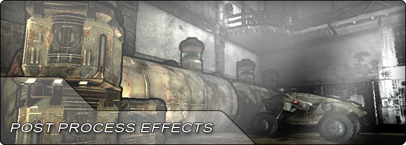

UDN
Search public documentation:
PostProcessEffectsHome
日本語訳
中国翻译
한국어
Interested in the Unreal Engine?
Visit the Unreal Technology site.
Looking for jobs and company info?
Check out the Epic games site.
Questions about support via UDN?
Contact the UDN Staff
中国翻译
한국어
Interested in the Unreal Engine?
Visit the Unreal Technology site.
Looking for jobs and company info?
Check out the Epic games site.
Questions about support via UDN?
Contact the UDN Staff
UE3 Home > Post Process Effects
Post Process Effects

Post processing allows different effects to be performed on the scene after it has been rendered, but before outputting it to the viewport. The post process framework in Unreal Engine 3 allows for artist-configurable post process effects, through groupings of post process elements forming an overall effect. Examples of elements and effects include bloom (HDR blooming effect on bright objects), depth of field, motion blur, ambient occlusion, and material effects, which are custom materials run on the final scene image.
- Post Process Editor User Guide - Overview of the node-based Post Process Editor in UE3.
- Post Process Effect Reference - Descriptions of every post process effect.
- Bloom - Description of the bloom (glow) post process effect.
- Color Grading - Tone mapping and color correction post process effect.
- Motion Blur - Description of the motion blur system used in UE3.
- Motion Blur SoftEdge - Explanation of using soft edges with motion blur.
- Motion Blur Skinning - Explanation of motion blur with skeletal meshes.
- Radial Blur - Description of the RadialBlurActor and its effect.
- Visualize Texture - Command that allows visualization of internal render targets.
- PostProcessAA - Description of the post process anti aliasing effect.
- Post Process Technical Guide - A technical overview of the Post Process Manager.
- Post Process Material Effects - Overview of using materials in post process effects.
- Bokeh Depth Of Field - Applies movie or photo like out of focus effects to the rendered image.
- Creating Post Processing nodes - Creating Kismet nodes to control post processing.
- Creating a Sobel Edge Detection Effect - Creating an outline effect using edge detection.
- HUD Distortion - How to create a HUD distortion post process effect.